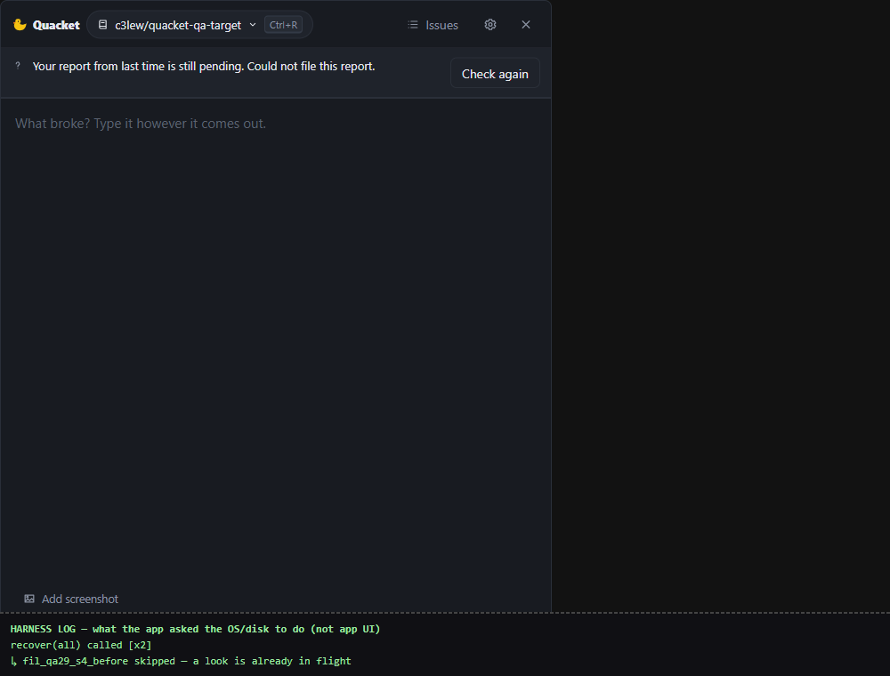
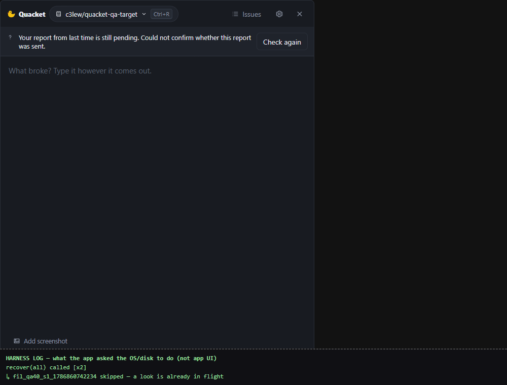
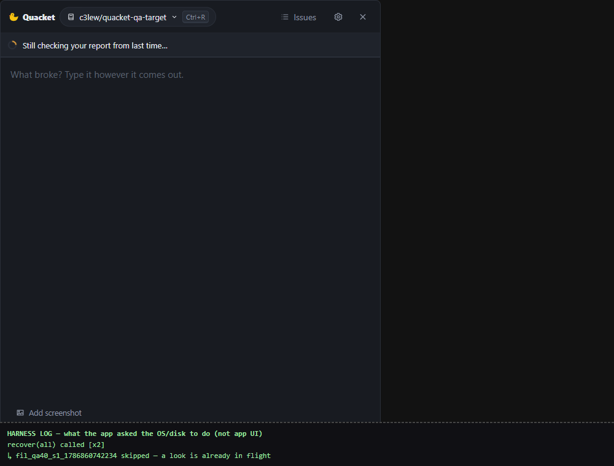
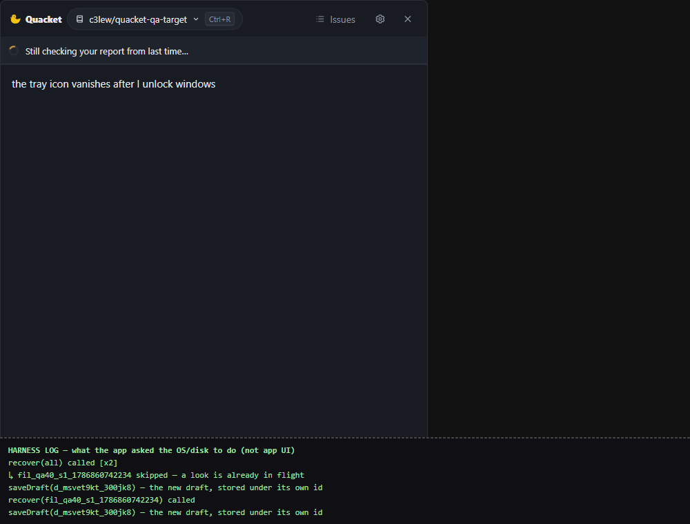
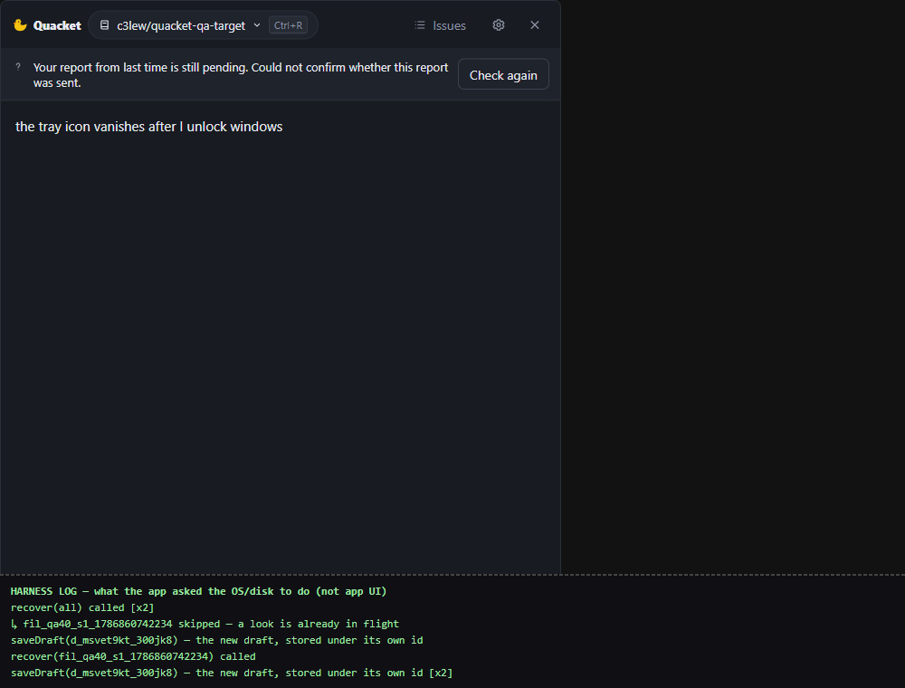
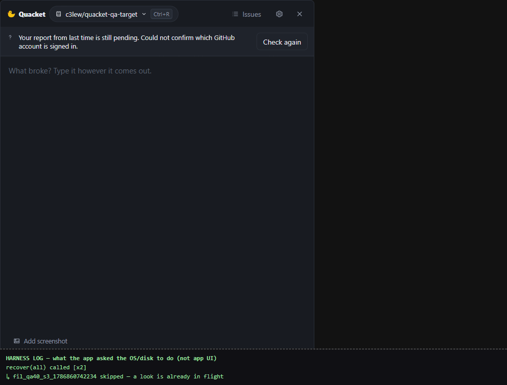
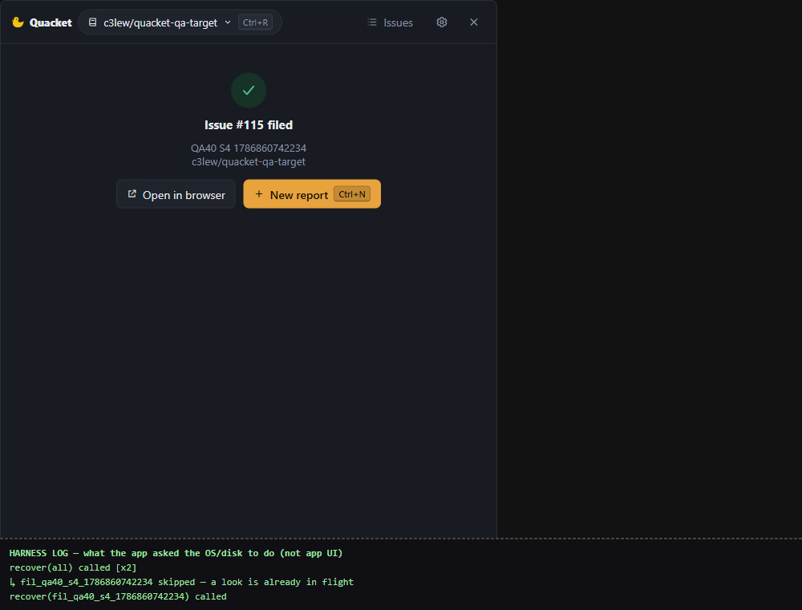

上次 #40 你選「現在修」。修好了,這頁只重看受影響的那一列,不重走整片。
原本那一列會同時說「還在確認」跟「送不出去」,一半說不知道、一半說確定失敗,旁邊還放一顆「再查一次」。現在它只說一件事:「我還不確定這份到底有沒有送出去」——跟那顆按鈕終於是同一件事了。
不擋這次驗收,你先知道,等下看到第 6 段不會嚇到。收尾時你決定要現在修、之後修、還是不修。
每一段都是「什麼情況 → 你會看到什麼」,附一張 QA 實跑的畫面截圖(真的跑出來拍的,不是示意圖)。你逐條看、逐條說「對,這是我要的」,不對就講,我當場分類。
這輪證據有個關鍵:畫面上那句話不是 QA 自己打進去的。真的 Quacket 對著真的 GitHub、真的硬碟跑一遍,把它自己吐出來的東西存成檔案,再原封不動放回畫面上重播。所以「看起來對」不可能是 QA 打對的。
想自己摸的話,一行指令就能把同款環境開起來:
bash docs/qa/40/replay.sh
bug 本體
什麼情況:#29 出貨的版本,舊報告卡住。
你會看到:一句話裡兩個互相打架的說法——
「還在等結果」跟「這份送不出去」不可能同時成立,而下面那顆按鈕又說「要不要再查一次」——查一件剛剛說已經確定失敗的事。

驗收項 18、38
什麼情況:同一個情境原封不動再跑一次——送出時失敗過一次,重開後想補送,結果硬碟又出問題。
你會看到:
整句都是「我不知道」,按鈕是「那就去問清楚」。一致了。

失敗的原因沒有被丟掉——Quacket 自己在硬碟上照舊記著是「建 issue 那步失敗了」,只是不拿這句去嚇你,因為它其實還沒確定結果。
驗收項 38(後半段)
什麼情況:剛打開 Quacket,它正在問 GitHub「上次那份到底怎麼了」。
你會看到:一列轉圈圈 +「Still checking your report from last time…」,完全沒有按鈕。結果都還不知道,這時候給你動作才是不安全的。

這正是上次你拍板改掉的那句驗收文字——「結果還不確定時不給動作」。這次順便驗到它真的是這樣。
驗收項 18
什麼情況:你按了 Check again,一邊等一邊繼續回報新的問題。
你會看到:那一列變回轉圈圈、按鈕暫時消失(所以不會被連按兩次重複開票),而輸入框完全不受影響——照樣打字。

驗收項 18
什麼情況:你按了再查,但情況還是沒好轉。
你會看到:同一句話回來、按鈕回來,你剛剛打到一半的新報告一個字都沒少。不會跳錯誤視窗、不會把你趕出去。

驗收項 38
什麼情況:補送的時候不是硬碟壞,而是 GitHub 直接把這次建 issue 擋掉。
你會看到:一樣是那句「還不確定有沒有送出去」,不會因為換一條失敗路線就冒出另一種說法。
這裡有件事值得講清楚,因為乍看像「講太保守」:這個情況下 QA 知道 GitHub 上什麼都沒建,但 Quacket 自己不知道——GitHub 回報失敗時,分不出「根本沒建成」還是「建成了但回報掉了」。所以「還不確定」是它唯一能誠實說的話,而它下次開機是去問 GitHub,不是回頭問你。
驗收項 38 · 同時是 #41 的證據
什麼情況:連線整個斷掉,Quacket 連問都問不到。
你會看到:那一列保留它自己的理由,不是被壓成上面那句通用的:
保留各自的理由是對的——不然你會失去「為什麼查不到」的線索。但這一句本身講錯了對象:真正發生的是網路斷了,它卻說登入有問題。這就是開頭先講的 #41,在 #40 之前就存在。

驗收項 18
什麼情況:網路回來了,你按 Check again。
你會看到:那份報告的結論出來了——Issue #115 filed,配 Open in browser 跟 New report。

這條是拿真的 GitHub 驗的:整個過程結束後,那個 repo 裡屬於這份報告的 issue 只有 1 張,不是 2 張。按「再查一次」是去問,不是再送一次。
真的 issue:c3lew/quacket-qa-target#115
上次 QA 提過:擋「程式內部字眼漏到畫面上」的自動檢查,只掃了句子、沒掃按鈕上的字。現在四種狀況的按鈕也一起掃了。目前按鈕本來就是乾淨的,這是防以後。
另外加了一道自動檢查:以後只要有人再把「確定失敗」的句子塞進「還不確定」那一列,build 會直接紅掉。這條驗過真的會咬——把修好的那行改回去,測試立刻失敗。
這輪一樣全程跑在瀏覽器裡,沒有經過 Windows 那層外殼(系統列圖示、全域快捷鍵、真正的 Windows 通知、自動更新)。這次改的是純文字層,而那一列在殼裡殼外是同一段程式畫出來的。
另外「還在確認時不會被連按兩次」那條,是對著 QA 的複製品驗的;按鈕在查的時候會消失才是真的產品行為(第 3 段那張)。
想在真的 app 上親手按一下的話,我可以現在把它起起來給你摸。